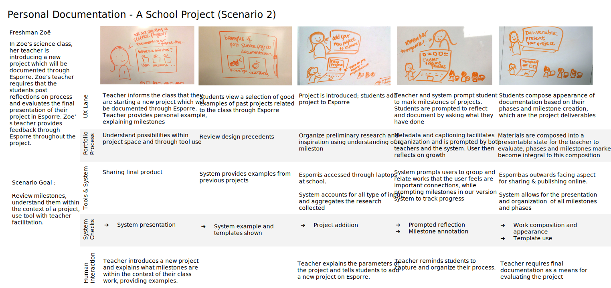
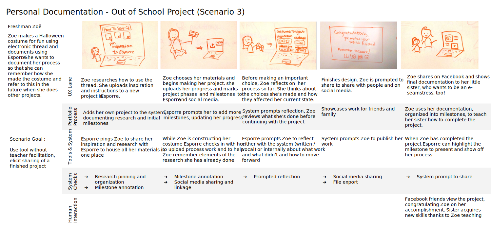
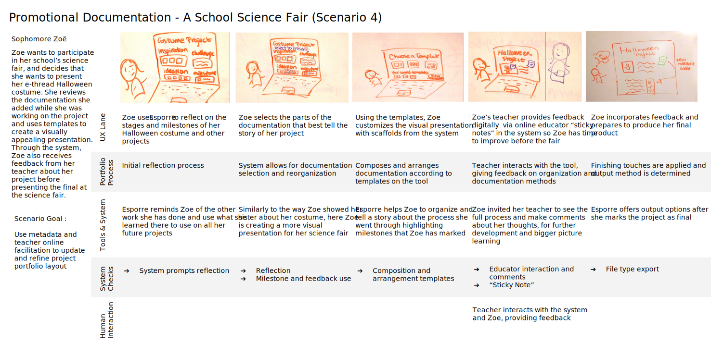
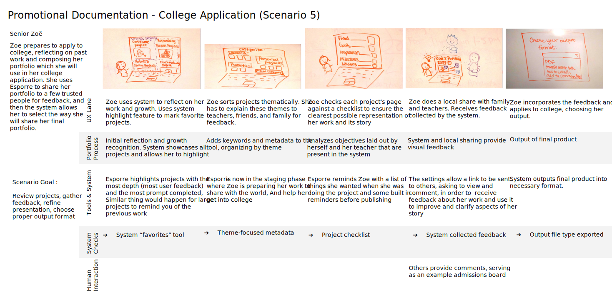
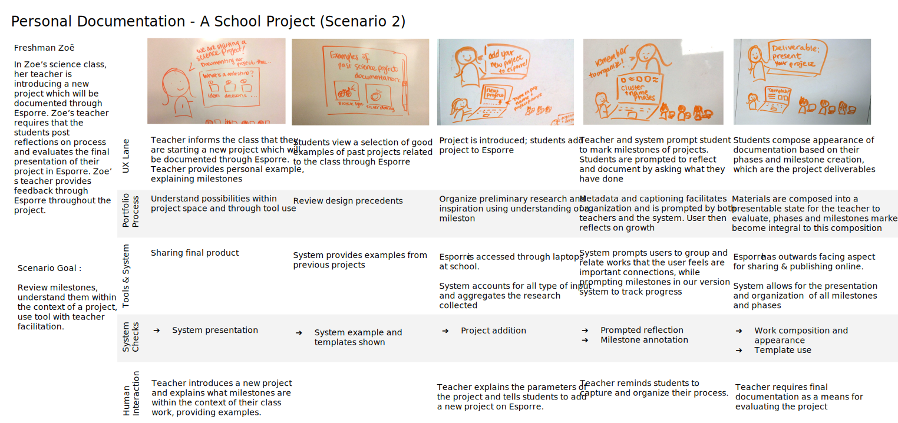
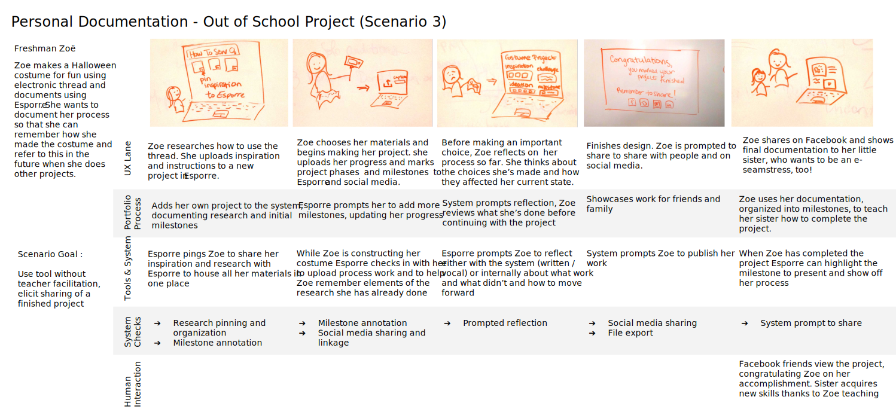
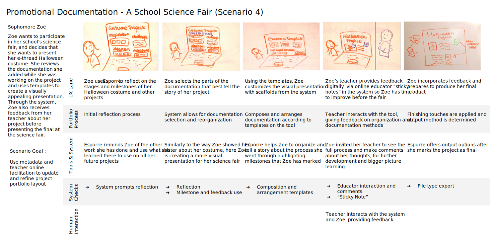
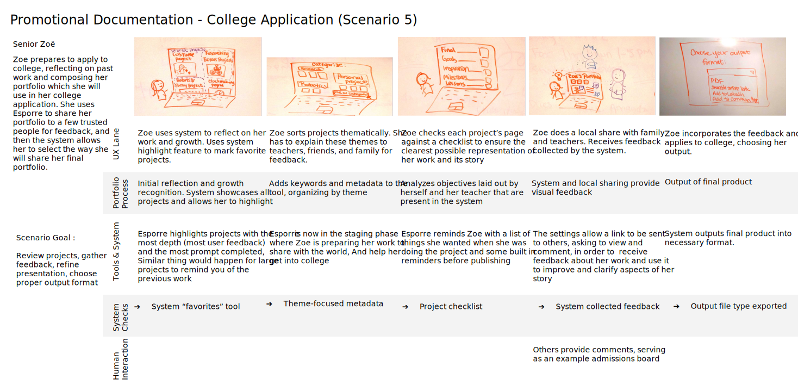
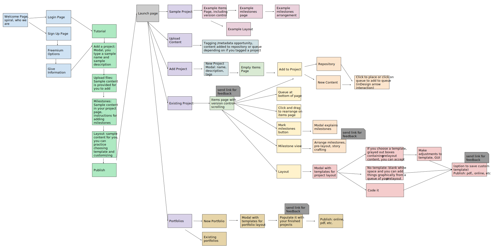

Design Research & Synthesis
Initial Steps & Guiding Literature
We collected our data in a collaborative method using a tool called realtimeboard.com. This allowed us to share insights, pictures, files, and thoughts with one another easily.
A literature review in which concepts such as user-centered design, problem-based learning, and persona creation were discussed. Notable articles read include : The Portfolio Process and the Processed Portfolio from Cambridge University, Modeling Users : Personas and Goals by Alan Cooper and Co., The Learning Practices of Making : An Evolving Framework for Design by Lisa Brahms and Peter Wardrip from the Children’s Museum of Pittsburgh, and Understanding the Problem : Design Research from Cooper’s About Face. These articles offered various perspectives and guidelines for our design process, and we have integrated the key insights from these articles into the sections below.
The Maker Ed Open Portfolio Research Briefs provided insights into what some of the existing documentation strategies and challenges are. Makers have found creative ways to document their processes, a memorable example being using egg cartons to hold ipads so that the makers could work uninterrupted while still collecting documentation. The brief detailed ways in which open portfolios could benefit students, from giving them ownership of their own work that would last between different learning settings, to increasing equity by allowing students to be represented by more than just a number in GPA or standardized test scores.
Guest speakers, primarily educators, provided us with the viewpoint that it is about more than just the needs of the users, but also the needs of teachers and facilitators of youth learning. During their class visits, we performed focused listening activities, allowing each facilitator to convey their narratives freely through directed storytelling activities while we, as a class, honed in on the Motivations, Opportunities, Tools and Methods, Goals and Purposes, Needs, and Challenges presented by each educator. Our three main guest speakers were Nina Barbuto, Founder of Assemble; Megan Cicconi, Director of Instructional Innovation at the Allegheny Intermediate Unit; and Randi Leonard, Online Technology Manager of Fox Chapel Area High School.
User Study 1 focused on determining what the current portfolio practices and processes are, which tools are used, what challenges and limitations are faced, and which design opportunities are available. The participants included were CMU students, highlighting their opinions and voices; we placed a special emphasis on getting a broad range of users, that is, not focusing on those within discipline.
User Study 2 had a similar focus to User Study 1 but focused on a different participant pool, encompassing facilitators, educators, and younger students. Additionally, the focus expanded to include facilitation processes. It followed a guerilla research method, where we used questionnaires and interviews to interact with the users. Again, we focused on getting a range, from children to adult.
Initially, we created a stakeholder map. This allowed us the opportunity to visually represent our primary users and the interactions and potential opportunities that can occur in relations to stakeholders.
A literature review in which concepts such as user-centered design, problem-based learning, and persona creation were discussed. Notable articles read include : The Portfolio Process and the Processed Portfolio from Cambridge University, Modeling Users : Personas and Goals by Alan Cooper and Co., The Learning Practices of Making : An Evolving Framework for Design by Lisa Brahms and Peter Wardrip from the Children’s Museum of Pittsburgh, and Understanding the Problem : Design Research from Cooper’s About Face. These articles offered various perspectives and guidelines for our design process, and we have integrated the key insights from these articles into the sections below.
The Maker Ed Open Portfolio Research Briefs provided insights into what some of the existing documentation strategies and challenges are. Makers have found creative ways to document their processes, a memorable example being using egg cartons to hold ipads so that the makers could work uninterrupted while still collecting documentation. The brief detailed ways in which open portfolios could benefit students, from giving them ownership of their own work that would last between different learning settings, to increasing equity by allowing students to be represented by more than just a number in GPA or standardized test scores.
Guest speakers, primarily educators, provided us with the viewpoint that it is about more than just the needs of the users, but also the needs of teachers and facilitators of youth learning. During their class visits, we performed focused listening activities, allowing each facilitator to convey their narratives freely through directed storytelling activities while we, as a class, honed in on the Motivations, Opportunities, Tools and Methods, Goals and Purposes, Needs, and Challenges presented by each educator. Our three main guest speakers were Nina Barbuto, Founder of Assemble; Megan Cicconi, Director of Instructional Innovation at the Allegheny Intermediate Unit; and Randi Leonard, Online Technology Manager of Fox Chapel Area High School.
User Study 1 focused on determining what the current portfolio practices and processes are, which tools are used, what challenges and limitations are faced, and which design opportunities are available. The participants included were CMU students, highlighting their opinions and voices; we placed a special emphasis on getting a broad range of users, that is, not focusing on those within discipline.
User Study 2 had a similar focus to User Study 1 but focused on a different participant pool, encompassing facilitators, educators, and younger students. Additionally, the focus expanded to include facilitation processes. It followed a guerilla research method, where we used questionnaires and interviews to interact with the users. Again, we focused on getting a range, from children to adult.
Initially, we created a stakeholder map. This allowed us the opportunity to visually represent our primary users and the interactions and potential opportunities that can occur in relations to stakeholders.
User Studies
We conducted three user studies in order to better understand the goals, needs, current practices, and challenges of our users.
In our first user study, we conducted six interviews with students, professors, alumni at Carnegie Mellon. We found out that students wanted a way to show off written work and they wanted a better way to store document the process, while professors were interested in a tool that would let students portray their unique story. Overall we found that Carnegie Mellon students and alumni found time and technology to be barriers to creating an ideal portfolio or to having a portfolio at all. Our participants emphasized that if one did not have the time and skill to produce a good portfolio to be proud of, that could promote oneself well, then one should not have a portfolio online at all. One participant even removed her portfolio because she did not want potential employers to see something that she believed was not representative of her best work. Participants emphasized that documentation was messy and time-consuming, and without immediate incentive of being on the job search, it was difficult to prioritize documentation above all the other work that Carnegie Mellon students had to do. Participants shared that they typically were not explicitly taught how to document or how to make a portfolio, but rather were taught implicitly through feedback in studio classes or learned informally.
Our second user study was conducted at the Pittsburgh Maker Faire, where we conducted surveys with 12 individuals and interviews with 9 of those participants. Our survey participants included on middle schooler, two high schoolers, two undergraduate college students, three teachers, one professional maker, and one person who identified themselves as other. There were eight males and four females. All of the participants had been making for a significant amount of time, with seven of the participants reporting that they had been making for one to five years, while five others had been making for over ten years. Half of our participants said they documented the final product of their making for a few projects, while the other half said they document for most projects. Seven participants said they document the process of a product for a few projects, while two said they document process for most projects and two said they never document the process of their making. This shows that people are already seeing documentation as a valuable thing to do and will be willing to use a documentation tool, and shows that there is an opportunity to increase process documentation. The predominant means of documentation was social media with eight participants using it, followed by blog platforms with six. The predominant audiences were for self, friends, and interested people online. Our findings show that the current use for the group who responded to our survey was a more personal form of documentation. Through our interviews, we also found that many organizers and facilitators document, curate, and share the work of the students to promote their programs, recruit new participants, and find funding. This aligned with the needs of the guest speakers who came to speak with our class, with backgrounds as facilitators in both formal and informal education.
Finally, we conducted a survey with students in a public school district who were using a career search and reflection system that they have termed a portfolio. After vicariously learning about the needs of the target user population through other stakeholders, we wanted to make sure that we could access the voice of the users themselves. Due the challenges in receiving permission to work with minors, we were not able to talk to students directly in a school setting but we believe the survey will provide useful insights about what students perceive portfolios to be and how they are documenting and sharing the work they do. The survey was taken by 15 students, most of whom were in 11th grade. From the survey, we found that students overwhelmingly share with people in their personal networks and share significantly less for promotional purposes. When asked further, students reported that there were various obstacles in sharing for promotional purposes. The students reported not being able to locate their past projects, or not knowing how to present their work in a professional manner. Students also reported not knowing how to share their projects.
In our first user study, we conducted six interviews with students, professors, alumni at Carnegie Mellon. We found out that students wanted a way to show off written work and they wanted a better way to store document the process, while professors were interested in a tool that would let students portray their unique story. Overall we found that Carnegie Mellon students and alumni found time and technology to be barriers to creating an ideal portfolio or to having a portfolio at all. Our participants emphasized that if one did not have the time and skill to produce a good portfolio to be proud of, that could promote oneself well, then one should not have a portfolio online at all. One participant even removed her portfolio because she did not want potential employers to see something that she believed was not representative of her best work. Participants emphasized that documentation was messy and time-consuming, and without immediate incentive of being on the job search, it was difficult to prioritize documentation above all the other work that Carnegie Mellon students had to do. Participants shared that they typically were not explicitly taught how to document or how to make a portfolio, but rather were taught implicitly through feedback in studio classes or learned informally.
Our second user study was conducted at the Pittsburgh Maker Faire, where we conducted surveys with 12 individuals and interviews with 9 of those participants. Our survey participants included on middle schooler, two high schoolers, two undergraduate college students, three teachers, one professional maker, and one person who identified themselves as other. There were eight males and four females. All of the participants had been making for a significant amount of time, with seven of the participants reporting that they had been making for one to five years, while five others had been making for over ten years. Half of our participants said they documented the final product of their making for a few projects, while the other half said they document for most projects. Seven participants said they document the process of a product for a few projects, while two said they document process for most projects and two said they never document the process of their making. This shows that people are already seeing documentation as a valuable thing to do and will be willing to use a documentation tool, and shows that there is an opportunity to increase process documentation. The predominant means of documentation was social media with eight participants using it, followed by blog platforms with six. The predominant audiences were for self, friends, and interested people online. Our findings show that the current use for the group who responded to our survey was a more personal form of documentation. Through our interviews, we also found that many organizers and facilitators document, curate, and share the work of the students to promote their programs, recruit new participants, and find funding. This aligned with the needs of the guest speakers who came to speak with our class, with backgrounds as facilitators in both formal and informal education.
Finally, we conducted a survey with students in a public school district who were using a career search and reflection system that they have termed a portfolio. After vicariously learning about the needs of the target user population through other stakeholders, we wanted to make sure that we could access the voice of the users themselves. Due the challenges in receiving permission to work with minors, we were not able to talk to students directly in a school setting but we believe the survey will provide useful insights about what students perceive portfolios to be and how they are documenting and sharing the work they do. The survey was taken by 15 students, most of whom were in 11th grade. From the survey, we found that students overwhelmingly share with people in their personal networks and share significantly less for promotional purposes. When asked further, students reported that there were various obstacles in sharing for promotional purposes. The students reported not being able to locate their past projects, or not knowing how to present their work in a professional manner. Students also reported not knowing how to share their projects.
User Insight Boards
From our user studies, we created insight boards to summarize the perspectives of the people we talked to. We highlighted quotes that were illustrative of the students’ challenges, portfolio processes, documentation goals, and motivations. We also summarized the portfolio processes of each user, and the tools that each of them were currently using, and pain points that the users were experiencing.
Personas
We designed four personas to cover the range of users that we found in our user research. Personas are important models for conducting user research because they can provide specifications for what the product should do and how it should be have. They also allow stakeholders, developers, and designers to share a common language and common understanding. People relate better to personas because they resemble people rather than lists. Personas can be used in early stages as a reality check for designs, and can be repurposed throughout an organization. Using personas, designers can avoid designing for an elastic or ill-defined user, and can make sure the design is relevant to a real user. Personas are composite and represent behavior patterns in a specific context. They avoid stereotyping, but instead strive to represent typical and exemplary behavior. These insights came from Personas and Goals by Cooper, Reimann, & Cronin.
In the chart below, we show where each persona falls along the spectrum of personal to promotional portfolio practices, and process-focused to final product-focused portfolio practices. We are largely focusing on the transition that a user makes between personal and promotional motivation as well as process to product documentation. That is, there is the expectation that users in one quadrant may move to another quadrant due to changes in their life stages and goals. A high school freshman may focus on their process and document for personal and social purposes, but will one day likely need to document for promotional purposes.
In the chart below, we show where each persona falls along the spectrum of personal to promotional portfolio practices, and process-focused to final product-focused portfolio practices. We are largely focusing on the transition that a user makes between personal and promotional motivation as well as process to product documentation. That is, there is the expectation that users in one quadrant may move to another quadrant due to changes in their life stages and goals. A high school freshman may focus on their process and document for personal and social purposes, but will one day likely need to document for promotional purposes.
Our tool will aid in that transition. It also allows for older students or professionals to revert back to personal documentation after they no longer need to be focused on promoting themselves to employers.
For the more personal and process documentation, we have an informal platform where a user could place sketches and pictures. They are prompted to write a caption or a reflection along with it to enhance their documentation.
From that, users manipulate those sketches, pictures, and other items and formalize them into a portfolio more produced for external audiences.
For the more personal and process documentation, we have an informal platform where a user could place sketches and pictures. They are prompted to write a caption or a reflection along with it to enhance their documentation.
From that, users manipulate those sketches, pictures, and other items and formalize them into a portfolio more produced for external audiences.
The Personas exist over a range of ages and Portfolio Proficiency. The age range is representative of the participants in User Study 1 and 2. As they are older than the actual target audience of the tool (9th-12th Graders), the personas were meant to mock future needs, challenges, obstacles, and opportunities these users may encounter. The Portfolio Proficiency was determined by challenges of the personas and sophistication of their process. The more advanced the technological use and the more thorough the documentation process, the greater the portfolio proficiency. The other aspects of the persona such as Goals/Motivations and Audience were derived from participant data in User Study 1 and 2.
Jamie - College Junior, Industrial Design
Jamie is a junior in college majoring in industrial design. He has a portfolio on Squarespace, featuring projects he’s done in his studio classes. He also tries to add professionals in his field on Facebook and Instagram. He posts photos and videos of his work in progress so that people become invested in projects that they’ve watched the growth of, and so that people know that the work is all his.
Jamie’s persona indicates that the portfolio tool designed needs to be both easily and quickly accessible and customizable, in order to accommodate users with more advanced technological skills. Furthermore, his persona indicates the importance of student ownership, something the tool needs to ensure.
Jamie - College Junior, Industrial Design
Jamie is a junior in college majoring in industrial design. He has a portfolio on Squarespace, featuring projects he’s done in his studio classes. He also tries to add professionals in his field on Facebook and Instagram. He posts photos and videos of his work in progress so that people become invested in projects that they’ve watched the growth of, and so that people know that the work is all his.
Jamie’s persona indicates that the portfolio tool designed needs to be both easily and quickly accessible and customizable, in order to accommodate users with more advanced technological skills. Furthermore, his persona indicates the importance of student ownership, something the tool needs to ensure.
Tyler - College Freshman, Engineering
Tyler is a freshman in college. He submitted a basic portfolio of high school work on slideroom for his college application. Now that he is in college, he wants to collect the finished work he’s done so that he can keep track of what he’s accomplished and iterate further on final products. He also hopes for feedback on the final products he posts.
Tyler’s persona reveals that the tool should be easy to use and allow for feedback, both from educators and friends and families.
Zoe - High School Junior
Zoe is a junior in high school. She participates in Maker activities outside of school and on weekends. Her school also puts a large emphasis on project based learning. She takes photos of her work and posts them to Facebook, Instagram, and Flickr. Soon, she will need to think about how to present herself to colleges.
Through Zoe’s persona, we learn that the tool needs to allow for a type of scaffolding in design, to accommodate for those that are unaware of how to assemble their works. Additionally, we learn that there must be an internal storage system to aid in the organization and record keeping of works. Lastly, we learn that the tool must allow for social media sharing of works.
Ashley - Secondary School Educator, Out-of-School Facilitator
Ashley is an in-school coordinator of project based learning activities and curriculum. She also run an out-of-school non-profit makeshop for high schoolers. She needs to recruit both members and funders for her non-profit. She often facilitates discussion between teachers and students.
Ashley’s persona focuses on educator and facilitator needs, namely that the tool should be easy to use and easy to teach, especially across contexts. Educators should be able to interact with the students on this tool. Educators need to not only learn how to use the tool, but be able to teach students how to use the tool.
Ashley is an in-school coordinator of project based learning activities and curriculum. She also run an out-of-school non-profit makeshop for high schoolers. She needs to recruit both members and funders for her non-profit. She often facilitates discussion between teachers and students.
Ashley’s persona focuses on educator and facilitator needs, namely that the tool should be easy to use and easy to teach, especially across contexts. Educators should be able to interact with the students on this tool. Educators need to not only learn how to use the tool, but be able to teach students how to use the tool.
Workflow & Scenarios
From our readings, and from our user studies, we formulated a workflow diagram that encompassed the portfolio process. We began by listing the phases, which were capture, manage, reflect, compose, and analyze. We then added the artifacts and evidence from each phase of the portfolio process, and ways that the successful creation of artifacts and evidence could be scaffolded by our system. Next, we added the tools that were related to the different phases. Finally, we developed scenarios that would occur during the various phases of our portfolio process based on our primary persona, Zoe.We developed five scenarios. We began with the tool tutorial as our first scenario. We ended up developing the tool tutorial as our first paper prototype. The other scenarios we created were an in school project, an out of school project, a school science fair presentation, and a college application. We developed the scenarios using sketches first, and then decided on the types of user interactions we wanted our system to have. We also noted which phases of the portfolio process were happening in each slide of our scenario. Another aspect of our system we designed based on our scenarios was where other people besides for the primary user might interact with our system. Finally, we created system requirements so that we could take this abstract use case that we designed based on our user research and develop a concrete system design.
 








Concept Prototyping & Refinements
Paper Prototyping
Using low-fidelity paper prototypes, we conducted user studies, analyzing the clarity of the initial layout and tutorial. Each user participated in “Think Aloud” activities, guided by the tutorial text. Users narrated their actions and thoughts as they proceeded through the tasks.Instead of a script, we created a set of talking points for the team member to follow when conducting the user tests. This allowed the flow of the prototyping procedure to remain casual and conversational.
From these tests, we determined that a guided first experience through the tool would be more useful that a strict tutorial. This shaped the remainder of the design decisions and prototypes created.
Additional considerations developed involved the amount of freedom we allowed users to have, ensuring that they had the choice to do certain tasks and also that every task they did had a distinct purpose.
Script/Talking Points
- Before the tutorial
- Ask about name and major
- The tutorial
- Explain the general goals of Esporre
- Online tool
- Helps High School student learn about documentation for both personal and promotional process throughout the steps of the project
- Introduce Think Aloud Activity
- Interact with the paper prototype, discuss what they are doing and thinking
- Explain that this is to mock up the tutorial users will use when beginning to use the tool
- Provide additional material and guidance as needed
- After tutorial is complete
- Ask for overall opinions and feelings
- Did it feel like a tutorial?
- How was the length?
- Was this useful?
- Additional thoughts
Dynamic Prototypes
Using medium fidelity digital wireframes, we conducted user studies analyzing the clarity of our icon design and site flow. We followed similar talking points as the Paper Prototype activities, again ensuring a conversational atmosphere. Users went through the screens of the site, interacting with the static screens while talking aloud about their perception of the flow of the website. From this Think Aloud activity, we redesigned certain icons and clarified page layout throughout the tool. We also added the concept of a project pipeline, which we wanted to be a part of the user’s mental model.

Using InVision, we created a high-fidelity, interactive prototype, where users could actually click through the site. From this prototype, we found that users were confused by the purpose of certain features of our system. In particular, we found that the regions feature was not clear. When we populated the regions with random images, the users did not understand that regions were meant to categorize the uploaded content. We corrected this by making the sample content in the final dynamic prototype related, thus showing the way the regions feature should properly be used.